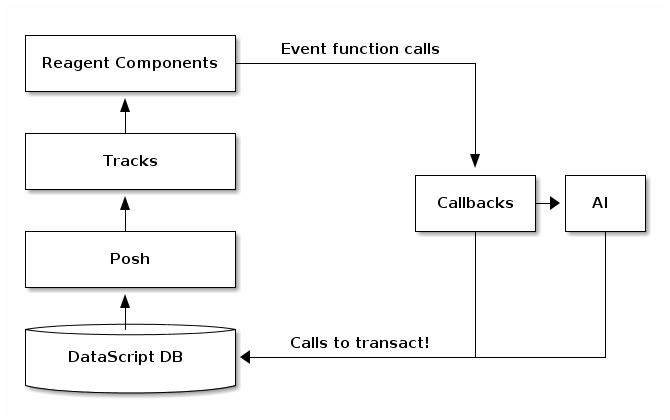
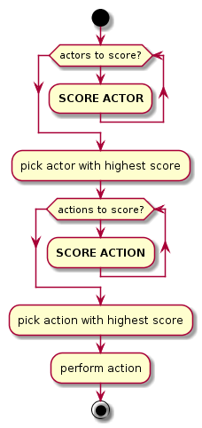

The Evolution of Zetawar
What is Zetawar?
- Turn based strategy browser game
- Successful Kickstarter project
- 100% ClojureScript
Goals
- A game that can last (serverless)
- Sizable reference ClojureScript codebase
- Beginner friendly AI environment
Demo
Talk outline
- Original architecture overview
- New architecture overview
- Original event system vs new event system
- Original AI system vs new AI system
- Optimizing Reagent and Posh
- How to write an AI
- Lessons learned
- Future plans
Original architecture

New architecture

Original architecture
| Model | DataScript |
| View | Reagent (React) |
| Model → View | Posh + Tracks |
| Event handling | Callbacks |
| AI communication | Direct DB interaction |
| Lifecycle | Component |
New architecture
| Model | Unchanged |
| View | Unchanged |
| Model → View | Unchanged |
| Event handling | Reified events + core.async |
| AI communication | Notifications and events |
| Lifecycle | Integrant |
New event system
- Events are data
- Dispatched via core.async
- Router sends events to handlers
- Handlers are pure functions (mostly)
- Handlers return
- Transactions
- Events
- AI notifications
Old event handler
(defn repair [conn ev] (let [db @conn [q r] (first (d/q '[:find ?q ?r :where [?a :app/selected-q ?q] [?a :app/selected-r ?r]] db))] (game/repair! conn (app/current-game-id db) q r) (clear-selection conn nil)))
New event handler
(defmethod router/handle-event ::repair-selected [{:as handler-ctx :keys [db]} _] (let [game (app/current-game db) cur-faction-color (game/current-faction-color game) [q r] (app/selected-hex db)] {:dispatch [[:zetawar.events.game/execute-action {:action/type :action.type/repair-unit :action/faction-color cur-faction-color :action/q q :action/r r}] [::clear-selection]]}))
New event handler
(defmethod router/handle-event ::execute-action [{:as handler-ctx :keys [db]} [_ action]] (let [game (app/current-game db)] ;; ... {:tx (game/action-tx db game action) :notify [[:zetawar.players/apply-action :faction.color/all action]]})))
Router
- Calls handlers
- Executes transactions
- Sends AI notifications
Router Loop
(defn start [{:as router-ctx :keys [ev-chan]}] (go-loop [msg (<! ev-chan)] (when msg (try (log/debugf "Handling event: %s" (pr-str msg)) (handle-event* router-ctx msg) (catch :default ex (js/Raven.captureException ex) (log/errorf ex "Error handling event: %s" (pr-str msg)))) (recur (<! ev-chan)))))
Router Event Handling
(defn handle-event* [{:as router-ctx :keys [conn ev-chan notify-chan]} msg] (let [ev-ctx (assoc router-ctx :db @conn) {:as ret :keys [tx]} (handle-event ev-ctx msg)] (log/tracef "Handler returned: %s" (pr-str ret)) (when tx (log/debugf "Transacting: %s" (pr-str tx)) (d/transact! conn tx)) (doseq [new-msg (:dispatch ret)] (dispatch ev-chan new-msg)) (doseq [notify-msg (:notify ret)] (players/notify notify-chan notify-msg))))
New event system advantages
- Validation
- Testing
- Logging
- Error handling
Original AI system

New AI system

Other action format uses
- Game logging and replay
- Network games
Optimizing Reagent and Posh
- Queries logic often overlaps
- Combine queries
- Use Reagent to create views
- Different data changes at different rates
- Use separate queries for fast vs slow data
- Query slow data in bulk
- Query fast data at granularity of change
Optimization example
(deftrack terrains [conn] (let [map-eid' @(game-map-eid conn)] (:map/terrains @(posh/pull conn [{:map/terrains terrain-pull}] map-eid')))) (deftrack map-width [conn] (or (->> @(terrains conn) (map :terrain/q) (apply max)) 0))
High level AI interface

Making an AI
- Implement actor (base/unit) score function
- Implement base action score function
- Implement unit action chooser
- Profit!
AI Example
(defn score-actor [db game actor actor-ctx] (cond (game/unit? actor) (rand-int 100) (game/base? actor) (+ (rand-int 100) 100))) (defn score-base-action [db game base action-ctx action] (rand-int 200))
AI Example
(defn mk-unit-action-ctx [db game actor-ctx unit] (assoc actor-ctx :closest-base (game/closest-capturable-base db game unit))) (defn score-unit-action [db game unit action-ctx action] (let [{:keys [closest-base]} action-ctx] (case (:action/type action) :action.type/capture-base 200 :action.type/attack-unit 100 :action.type/move-unit (let [[base-q base-r] (game/terrain-hex closest-base) {:keys [action/to-q action/to-r]} action base-distance (hex/distance base-q base-r to-q to-r)] (- 100 base-distance)) 0)))
Lessons learned
TODO: add more content
- Relational model++
- DataScript is fast enough
- Lots of room for optimization
Future plans
TODO: add more content
- Engage with the community
- Add more AI helper functions
- Spec data format
Q and A
TODO: add links